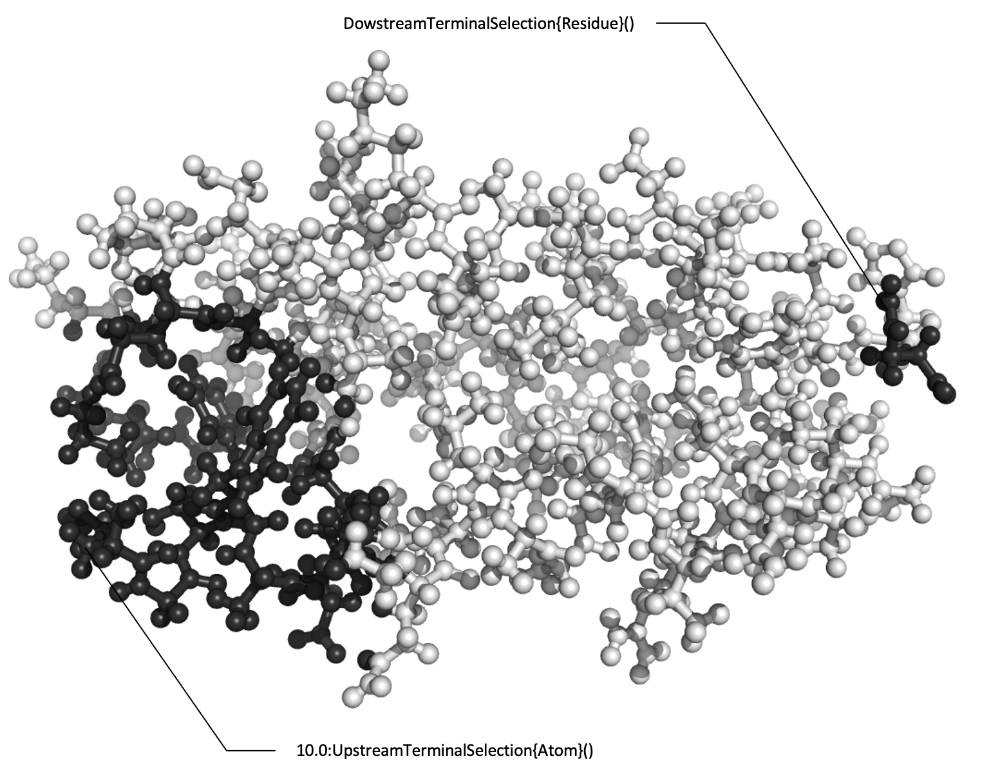

Selections
The Selections are a submodule of
ProtoSyn.Coremodule. As such, the following section introduces both new types and methods that work together, in a generally independent way from the rest of the module, and require an unique exploratory section on their own.
ProtoSyn comes equipped with a powerful syntax for selecting parts of molecular systems based on several different parameters. The parent type of all Selections is an AbstractSelection, which is parametrized by 2 different static types:
First, a State mode (of abstract type
AbstractStateMode) indicates whether anAbstractSelectionisStatefulorStateless.Secondly, a Selection type is an instance of
AbstractContainer(such as anAtom,ResidueorSegment), and indicates the type of molecular structure that in being queried. For example, depending on the selection type, we can select allResidueinstances named "ALA" or allAtominstances named "ALA".
Some AbstractSelection types can use regular expressions (Regex) to search for the desired parameter. Such cases are discussed individually.
Selections, when applied to an AbstractContainer, return a binary Mask (see Masks section). These can be combined with others Masks (see Combining selections), used directly in Methods or gathered to a list of the actual instances of AbstractContainer (see Applying selections section).
The Selections section will be sub-divided in the following topics, for organization:
Available selections
In this section the list all available AbstractSelection types will be explored.
SerialSelectionRangeSelectionFieldSelectionUpstreamTerminalSelectionDownstreamTerminalSelectionDistanceSelectionRandomSelectionRandomSelectionFromListRandomRangeSelectionTrueSelectionUnarySelectionAromaticSelectionBondCountSelectionBondedToSelectionChargeSelection
ProtoSyn.SerialSelection — TypeSerialSelection{T}(serial::Int, field::Symbol) where {T <: AbstractContainer}A SerialSelection selects instances based on :id and :index. It takes an input serial (as an Int) and a field (as a Symbol) and outputs a Mask (of type T <: AbstractContainer) containing all instances of said type in the given container whose field matches the serial number given marked as true. This selection works similarly to FieldSelection, but is especialized in dealing with number variables.
State mode
The state mode of SerialSelection M is forced to be Stateless.
Selection type
The selection type of SerialSelection can be any T <: AbstractContainer.
Short syntax
- sid"..." = Segment ID;
- rid"..." = Residue ID;
- aid"..." = Atom ID;
- six"..." = Segment Index;
- rix"..." = Residue Index;
- aix"..." = Atom Index;
Examples
julia> sele = SerialSelection{Segment}(1, :id)
SerialSelection › Segment.id = 1
julia> sele = SerialSelection{Atom}(2, :index)
SerialSelection › Atom.index = 2
julia> sele = sid"1"
SerialSelection › Segment.id = 1
julia> sele = aix"2"
SerialSelection › Atom.index = 2ProtoSyn.RangeSelection — TypeRangeSelection{T}(range::UnitRange{Int}, field::Symbol) where {T <: AbstractContainer}A RangeSelection takes an input range (as an UnitRange{Int}) and a field (as a Symbol) and outputs a Mask (of type T <: AbstractContainer) containing all instances of said type in the given container whose field matches is in the range given. This selection works simillarly to FieldSelection, but is especialized in dealing with numbers.
The RangeSelection is inclusive, meaning the :id of :index given in the selection will also be included in the selected Mask.
State mode
The state mode of RangeSelection M is forced to be Stateless.
Selection type
The selection type of RangeSelection can be any T <: AbstractContainer.
Short syntax
- sid"..." = Segment ID
- rid"..." = Residue ID
- aid"..." = Atom ID
- six"..." = Segment Index;
- rix"..." = Residue Index;
- aix"..." = Atom Index;
Examples
julia> sele = RangeSelection{Segment}(1:4, :id)
RangeSelection › Segment.id between 1 and 4
julia> sele = RangeSelection{Atom}(2:10, :index)
RangeSelection › Atom.index between 2 and 10
julia> sele = sid"1:4"
RangeSelection › Segment.id between 1 and 4
julia> sele = aix"2:10"
RangeSelection › Atom.index between 2 and 10This selection assumes that all Abstractcontainer instances are ordered (i.e: aid"1:10" will select atoms 1, 2, 3, 4, 5, 6, 7, 8, 9 and 10).
ProtoSyn.FieldSelection — TypeFieldSelection{T}(pattern::String, field::Symbol, [is_regex::Bool = false]) where {T <: AbstractContainer}A FieldSelection takes an input pattern (as a String) and a field (as a Symbol) and outputs a Mask (of type T <: AbstractContainer) containing all instances of said type in the given container whose field matches the pattern marked as true. The given pattern can be considered as a Regular Expression (Regex), if is_regex flag is set to true. Optinally, when using a short syntax, appending an "r" flag at the end of the expression also sets is_regex to true.
State mode
The state mode of FieldSelection M is forced to be Stateless.
Selection type
The selection type of FieldSelection can be any T <: AbstractContainer.
Short syntax
- an"..." = Atom name
- as"..." = Atom symbol
- rn"..." = Residue name
- sn"..." = Segment name
Examples
julia> sele = FieldSelection{Atom}("C", :symbol)
FieldSelection › Atom.symbol = C
julia> sele = FieldSelection{Residue}("AL*", :name, is_regex = true)
FieldSelection › Residue.name = r"AL*"
julia> sele = as"C"
FieldSelection › Atom.symbol = C
julia> sele = rn"AL*"r
FieldSelection › Residue.name = r"AL*"
Figure 1 | An example of a Serial, Range and Field selections being employed.
ProtoSyn.UpstreamTerminalSelection — TypeUpstreamTerminalSelection{T}() where {T <: AbstractContainer}An UpstreamTerminalSelection returns a Mask selecting only the upstream terminal Residue or Atom instances in a Pose or AbstractContainer. Upstream terminal instances are defined as being children of the Pose or AbstractContainer root.
State mode
The state mode of UpstreamTerminalSelection M is forced to be Stateless.
Selection type
The selection type of UpstreamTerminalSelection T is forced to be either Residue or Atom.
This selection does not have a short syntax version.
Examples
julia> sele = UpstreamTerminalSelection{Residue}()
UpstreamTerminalSelection (Residue)ProtoSyn.DownstreamTerminalSelection — TypeDownstreamTerminalSelection{T}() where {T <: AbstractContainer}A DownstreamTerminalSelection returns a Mask selecting only downstream terminal Residue or Atom instances in a Pose or AbstractContainer. Downstream terminal instances are defined as instances with a parent but no children.
State mode
The state mode of DownstreamTerminalSelection M is forced to be Stateless.
Selection type
The selection type of DownstreamTerminalSelection T is forced to be either Residue or Atom.
This selection does not have a short syntax version.
Examples
julia> sele = DownstreamTerminalSelection()
DownstreamTerminalSelection (Residue)ProtoSyn.DistanceSelection — TypeDistanceSelection(distance::Number, sele::S) where {S <: AbstractSelection}A DistanceSelection takes an input selection sele and outputs a Mask of Atom instances within the given distance (in Ansgtrom Å) of the selected atoms from sele.
State mode
The state mode of DistanceSelection M is forced to be Stateful
Selection type
The selection type of DistanceSelection T is forced to be Atom.
Examples
julia> sele = DistanceSelection(2.0, rn"ALA")
DistanceSelection ❯ Within 2.0 Å (Atom)
└── FieldSelection › Residue.name = ALA
julia> 2.0:rn"ALA"
DistanceSelection ❯ Within 2.0 Å (Atom)
└── FieldSelection › Residue.name = ALA
Figure 2 | An example of the Terminal and Distance selections being employed.
ProtoSyn.RandomSelection — TypeRandomSelection{T}(sele::Opt{AbstractSelection}) where {T <: AbstractContainer}A RandomSelection outputs a Mask (of type T <: AbstractContainer) containing a random instance of said type in the given container. Optionally, if an AbstractSelection sele is provided, the random selection is performed from the previously selected instances (from the inner sele). Note that, despite the inner sele selection type, the output will always be promoted to be of T type (using the promote method.)
State mode
The state mode of RandomSelection M is forced to be Stateless.
Selection type
The selection type of RandomSelection can be any T <: AbstractContainer.
This selection does not have a short syntax version.
Examples
julia> sele = RandomSelection{Residue}()
RandomSelection › Residue.id
julia> RandomSelection{Atom}(rid"1")
RandomSelection › Atom.id › From
└── SerialSelection › Residue.id = 1
julia> RandomSelection{Atom}(an"C" & rid"1")
RandomSelection › Atom.id › From
└── BinarySelection ❯ & "and" (Atom)
├── FieldSelection › Atom.name = C
└── SerialSelection › Residue.id = 1ProtoSyn.RandomSelectionFromList — TypeRandomSelectionFromList(selections::Vector{T}) where {T <: AbstractSelection}A RandomSelectionFromList outputs a Mask (of type T <: AbstractContainer). This Mask is the result of the application of a randomly selected AbstractSelection from the provided list of AbstractSelection instances selections.
All the given AbstractSelection instances must be of the same type.
State mode
The state mode of RandomSelectionFromList M is the same as the state mode of the provided list of AbstractSelection instances (which are all of the same type).
Selection type
The selection type of RandomSelectionFromList M is the same as the selection type of the provided list of AbstractSelection instances (which are all of the same type).
This selection does not have a short syntax version.
Examples
julia> s = ProtoSyn.RandomSelectionFromList([rid"1", rid"2"])
RandomSelectionFromList ❯ (Residue)
├── SerialSelection › Residue.id = 1
└── SerialSelection › Residue.id = 2
julia> s = ProtoSyn.RandomSelectionFromList([rid"1", rn"CBZ"])
ERROR: AssertionError: RandomSelectionFromList `selections` elements must be all of the same type.ProtoSyn.RandomRangeSelection — TypeRandomRangeSelection{T}() where {T <: AbstractContainer}A RandomRangeSelection outputs a Mask (of type T <: AbstractContainer) containing a random range of instances of said type in the given container. The considered range is based on the instance's :id.
State mode
The state mode of RandomRangeSelection M is forced to be Stateless.
Selection type
The selection type of RandomRangeSelection can be any T <: AbstractContainer.
This selection does not have a short syntax version.
Examples
julia> sele = RandomRangeSelection{Residue}()
RandomRangeSelection › Residue.idThis selection assumes that all Abstractcontainer instances are ordered (i.e: a random range between atom 1 and atom 10 will select atoms 1, 2, 3, 4, 5, 6, 7, 8, 9 and 10).
ProtoSyn.AromaticSelection — TypeAromaticSelection([d::Int = 6])An AromaticSelection selects Atom instances that belong to an aromatic ring. Rings are identified by their bonds, using the travel_bonds method: any atom who exists in the set of bonded atoms within d bonds to itself forms a ring (d = 6, by default).
State mode
The state mode of SerialSelection M is forced to be Stateless.
Selection type
The selection type of SerialSelection T is forced to be Atom.
This selection does not have a short syntax version.
Examples
julia> AromaticSelection(6)
AromaticSelection (Rings with 6 or less bonds) › (Atom)
julia> AromaticSelection(7)
AromaticSelection (Rings with 7 or less bonds) › (Atom)
Figure 3 | An example of the Aromatic selection being employed.
ProtoSyn.BondCountSelection — TypeBondCountSelection{T}(n::Int, op::Function = ===)A BondCountSelection takes an input n value and an op (as a Function, is ===, by default) and outputs a Mask (of type Atom) containing all Atom instances whose number of bonded Atom instances (in atom.bonds) matches the given n (when compared with op). As an example, op can be >, <=, ==, etc.
State mode
The state mode of BondCountSelection M is forced to be Stateless.
Selection type
The selection type of BondCountSelection is forced to be Atom.
This selection does not have a short syntax version.
Examples
julia> BondCountSelection(1)
BondCountSelection (Atoms with N bonds === 1) › (Atom)
julia> BondCountSelection(3, >)
BondCountSelection (Atoms with N bonds > 3) › (Atom)ProtoSyn.BondedToSelection — TypeBondedToSelection(sele::S)A BondedToSelection takes an input selection sele and outputs a Mask of Atom instances which are bonded to any selected Atom from the inner sele. Note that the inner sele is automatically promoted to be of Atom selection type (using the promote method).
State mode
The state mode of BondedToSelection M is forced to be Stateless.
Selection type
The selection type of BondedToSelection T is forced to be Atom.
This selection does not have a short syntax version.
Examples
julia> BondedToSelection(an"C")
BondedToSelection ❯ (Atom)
└── FieldSelection › Atom.name = C
Figure 4 | An example of the Bond Count and Bonded To selection being employed.
ProtoSyn.ChargeSelection — TypeChargeSelection(charge::F, op::Function = ===) where {F <: AbstractFloat}A ChargeSelection takes an input charge value and an op (as a Function, is ===, by default) and outputs a Mask (of type Atom) containing all Atom instances whose AtomState charge matches the given charge (when compared with op). As an example, op can be >, <=, ==, etc.
State mode
The state mode of ChargeSelection M is forced to be Stateful.
Selection type
The selection type of ChargeSelection is forced to be Atom.
This selection does not have a short syntax version.
Examples
julia> ChargeSelection(1.0)
ChargeSelection (Atoms with charge === 1.0) › (Atom)
julia> ChargeSelection(-1.0, >)
ChargeSelection (Atoms with charge > -1.0) › (Atom)ProtoSyn.TrueSelection — TypeTrueSelection{T}()A TrueSelection returns a Mask (of type T <: AbstractContainer) with all entries set to true.
State mode
The state mode of [TrueSelection] M is forced to be Stateless.
Selection type
The selection type of RandomRangeSelection can be any T <: AbstractContainer.
This selection does not have a short syntax version.
Examples
julia> sele = TrueSelection{Atom}()
TrueSelection (Atom)
julia> sele = !TrueSelection{Atom}()
UnarySelection ❯ ! "not" (Atom)
└── TrueSelection (Atom)ProtoSyn.UnarySelection — TypeUnarySelection{M}(op::Function, sele::AbstractSelection)A UnarySelection applies an operation op to the given AbstractSelection sele. Available operations with short syntax:
!- Logical Not. Negates the values selected bysele.
State mode
The selection type of UnarySelection can be either Stateless or Stateful. When using the short syntax, it will automatically be set to the StateMode of the provided sele.
Selection type
The selection type of UnarySelection can be any T <: AbstractContainer. When queried for using the selection_type function, will return the selection type of the given sele.
Examples
julia> sele = !rn"ALA"
UnarySelection ❯ ! "not" (Residue)
└── FieldSelection › Residue.name = ALAMasks
Masks are the primary result of applying a Selection to an AbstractContainer. These are, in essence, arrays of Bool instances, set to true only on the Atom, Residue or Segment instances that satisfy the restrictions imposed by any given selection (or combination of selections). The total size of a Mask is the amount of Atom, Residue or Segment instances in the AbstractContainer the selection is applied to (see Applying selections section).
ProtoSyn.Mask — TypeProtoSyn.Mask{T}(content::BitVector) where {T <: AbstractContainer}A Mask is a typed wrapped on a BitArray, and therefore can be N dimensional. Utility functions are provided for Mask instances up to 2D.
ProtoSyn.Mask{T}() where {T <: AbstractContainer}Return an empty Mask of length 0.
ProtoSyn.Mask{T}(n::Int) where {T <: AbstractContainer}Return a Mask of length n with all bits set to false.
ProtoSyn.Mask{T}(n::Tuple{Int, Int}) where {T <: AbstractContainer}
ProtoSyn.Mask{T}(n1::Int, n2::Int) where {T <: AbstractContainer}Return a 2D Mask of size n (or size (n1, n2)) with all bits set to false.
Selection type
The selection type of a Mask instance can be any T <: AbstractContainer.
Combinatory operators (& and |) and unary operators (!) can be employed with Mask instances.
Examples
julia> ProtoSyn.Mask{Atom}()
ProtoSyn.Mask{Atom}(0,)
0-element BitArray{1}
julia> ProtoSyn.Mask{Residue}((3, 3))
ProtoSyn.Mask{Residue}(3, 3)
3×3 BitMatrix:
0 0 0
0 0 0
0 0 0
julia> !ProtoSyn.Mask{Atom}(5)
ProtoSyn.Mask{Atom}(5,)
5-element BitVector:
1
1
1
1
1Promotion
Promoting a selection or Mask refers to the act of changing the output selection type. As an example, one could promote the selection rn"ALA" (which would output a Mask of Residue instances selected) to output a Mask of Atom instances selected instead. Following the notion that core types in ProtoSyn have an established hierarchical relationship (Topology > Segment > Residue > Atom), this example type of promotion would be a downwards promotion. The opposite case would be an upwards promotion, such as promoting an"CB" to output a Mask of Residue instances instead. In such case, an extra parameter is required: an agregating function. Usually, this is either any (i.e.: select residues that contain at least one CB atom - this is the default) or all (i.e: select residues where all atoms are CB).
We have two options for promotion operations:
1 | Promote the underlying AbstractSelection, before applying to an AbstractContainer. This is, in essence, an AbstractSelection type by itself;
ProtoSyn.PromoteSelection — TypePromoteSelection(sele::AbstractSelection, ::Type{T}, op::Function) where {T <: AbstractContainer}A PromoteSelection takes an input selection sele and outputs the same result in a different Mask type, (depending on the operation op requested for upwards promotions).
State mode
The selection type of PromoteSelection can be either Stateless or Stateful: it will automatically be set to the StateMode of the provided sele on the constructor.
Selection type
The selection type of PromoteSelection can be any T <: AbstractContainer. When queried for using the selection_type function, will return the selection type of the given sele.
This selection does not have a short syntax version. However, the promote function is used to return PromoteSelection instances with a more user friendly syntax.
Examples
julia> sele = PromoteSelection(rn"ALA", Segment, all)
PromoteSelection ❯ From Residue to Segment
└── FieldSelection › Residue.name = ALAProtoSyn.promote — Methodpromote(sele::AbstractSelection, ::Type{T2}, [aggregator::Function = any]) where {T2 <: AbstractContainer}Return a PromoteSelection instance for selection sele, promoting to the requested type T2 <: AbstractContainer. If this is an upwards promotion, use the given aggregator function (default: any).
Examples
julia> ProtoSyn.promote(rn"ALA", Atom)
PromoteSelection ❯ From Residue to Atom
└── FieldSelection › Residue.name = ALA2 | Promote an already calculated Mask instance (by applying the selection - see Applying selections section).
ProtoSyn.promote — Methodpromote(mask::Mask{T1}, ::Type{T2}, container::AbstractContainer, f::Function = any)::Mask where {T1 <: AbstractContainer, T2 <: AbstractContainer}Cast a Mask of type T1 to be of type T2, in the context of the given container. If casting to a higher ranking type (upwards promotion - Ex. Atom -> Residue), a function f establishes the grouping operation (any occurrence (by default) or all occurrences of lower ranking type must be true to set the higher ranking entry to true.)
Examples
julia> m1 = an"CB"(pose);
julia> ProtoSyn.promote(m1, Residue, pose.graph);ProtoSyn.promote — Methodpromote(m1::Mask{T1}, m2::Mask{T2}, container::AbstractContainer) where {T1, T2}Promote one of the 2 given Masks (m1 and m2) to the lowest ranking common type (Ex. promote(m1::Mask{Residue}, m2::Mask{Atom}) => (Mask{Atom}, Mask{Atom)).
Examples
julia> m1 = an"CB"(pose);
julia> m2 = rn"LEU"(pose);
julia> ProtoSyn.promote(m1, m2, pose.graph);Combining selections
Two selections can be combined using logical operators (such as or and and), returning a BinarySelection. The resulting selection's StateMode and selection type depend on the two merged selections.
ProtoSyn.BinarySelection — TypeBinarySelection(op::Function, left::L, right::R) where {L <: AbstractSelection, R <: AbstractSelection}A BinarySelection merges two selections using different operators op, such as and and or. Return a new BinarySelection that combines both left and right AbstractSelections, using the defined operator op.
State mode
If the defined selections have the same state mode, the resulting mask will be of that state mode. If the defined selections have different state modes (Ex: Stateless and Stateful) the resulting selection will have a Stateful state mode.
Selection type
If the defined have the same selection type, the resulting mask will be of that type. If the defined selections have different selection types (Ex: Atom and Residue), the resulting mask will be promoted to the lowest ranking type (Ex: Atom).
See also
Short syntax
- ... & ...
- ... | ...
BinarySelection instances are left-dominant, meaning that a grouping of logical operators such as rn"ALA" & rn"LEU" | an"CA" will first resolve the rn"ALA" & rn"LEU" part (which should return an all-false Mask) and only then combine this Mask with the | an"CA" BinarySelection, thus essentially selecting only the CA atoms of the AbstractContainer its applied to.
However, selections respect to parenthesis grouping, meaning rn"ALA" & (rn"LEU" | an"CA") will first resolve rn"LEU" | an"CA" (which should return a Mask selecting all atoms of all LEU residues plus the CA atoms of all other residues) and only then combine this Mask with the rn"ALA" & BinarySelection, thus essentially selecting only the CA atoms of any ALA residues of the AbstractContainer its applied to.
Examples
julia> sele = BinarySelection(&, rn"ALA", an"CA")
BinarySelection ❯ & "and" (Atom)
├── FieldSelection › Residue.name = ALA
└── FieldSelection › Atom.name = CA
julia> rn"ALA" & an"CA"
BinarySelection ❯ & "and" (Atom)
├── FieldSelection › Residue.name = ALA
└── FieldSelection › Atom.name = CA
Figure 5 | An example of a possible combination of AbstractSelection types, in ProtoSyn. In this example, two FieldSelection instances (an"CA" and rn"ALA") are combined using a BinarySelection, with operation op being the & ("and"), effectly selecting all Atom instances in a given Pose who are CA atoms belonging to an ALA residue. This AbstractSelection is further used as input for a DistanceSelection, selecting all Atom instances within 10.0 Å of a CA atom in an ALA residue. Since FieldSelection instances act directly on a given Pose instance (and not on other AbstractSelection instances), these are said to be "leaf selections", in contrast with "branch selections". Branch selections act on other AbstractSelection instances. For example, the BinarySelection combines two AbstractSelection instances with a given operator op.
Applying selections
As stated in the Masks section, selections are applied to AbstractContainer instances, selecting all elements of the desired selection type in that container. This is known as resolving the selection. All AbstractSelection instances are actually functors, meaning that selections are callable objects.
julia> rn"ALA"(pose.graph)ProtoSyn.Mask ├── Type: Residue ├── Size: (4,) ├── Count: 1 / 4 └── Content: [0, 1, 0, 0]
When applying BinarySelection instances, note the need for parenthesis to highlight what is part of the selection, to avoid syntax errors. The same applies to compound selections, such as DistanceSelection instances, for example.
julia> (rn"ALA" & an"CA")(pose)ProtoSyn.Mask ├── Type: Atom ├── Size: (49,) ├── Count: 1 / 49 └── Content: [0, 0, 0, 0, 0, 0, 0, 0, 0, 1 … 0, 0, 0, 0, 0, 0, 0, 0, 0, 0]
As stated before, Stateful selections require a State to calculate the selection. Given the syntax used, there are two ways of providing the State:
julia> (10:rn"ALA")(pose.graph)(pose.state)ProtoSyn.Mask ├── Type: Atom ├── Size: (49,) ├── Count: 49 / 49 └── Content: [1, 1, 1, 1, 1, 1, 1, 1, 1, 1 … 1, 1, 1, 1, 1, 1, 1, 1, 1, 1]julia> (10:rn"ALA")(pose.graph, pose.state)ProtoSyn.Mask ├── Type: Atom ├── Size: (49,) ├── Count: 49 / 49 └── Content: [1, 1, 1, 1, 1, 1, 1, 1, 1, 1 … 1, 1, 1, 1, 1, 1, 1, 1, 1, 1]
In such cases, the second syntax (sele(pose.graph, pose.state)) is recomended.
Specific methods are available to apply selections to Pose instances, in particular. In this cases, the methods automatically calls sele(pose.graph, pose.state)
julia> (10:rn"ALA")(pose)ProtoSyn.Mask ├── Type: Atom ├── Size: (49,) ├── Count: 49 / 49 └── Content: [1, 1, 1, 1, 1, 1, 1, 1, 1, 1 … 1, 1, 1, 1, 1, 1, 1, 1, 1, 1]julia> rn"ALA"(pose)ProtoSyn.Mask ├── Type: Residue ├── Size: (4,) ├── Count: 1 / 4 └── Content: [0, 1, 0, 0]
Finally, selections (and Mask instances) can be gathered. This, in essence, means looping over the resolved Mask and appending the actually selected Atom, Residue or Segment instances to an output Vector. This process can be done in one of two ways:
1 | By using the optional flag gather when applying a selection to an AbstractContainer (recommended);
julia> an"^C.*$"r(pose, gather = true)15-element Vector{Atom}: Atom{/UNK:1/UNK:1/GLY:1/CA:3} Atom{/UNK:1/UNK:1/GLY:1/C:6} Atom{/UNK:1/UNK:1/ALA:2/CA:10} Atom{/UNK:1/UNK:1/ALA:2/CB:12} Atom{/UNK:1/UNK:1/ALA:2/C:16} Atom{/UNK:1/UNK:1/MET:3/CA:20} Atom{/UNK:1/UNK:1/MET:3/CB:22} Atom{/UNK:1/UNK:1/MET:3/CG:25} Atom{/UNK:1/UNK:1/MET:3/CE:29} Atom{/UNK:1/UNK:1/MET:3/C:33} Atom{/UNK:1/UNK:1/GLU:4/CA:37} Atom{/UNK:1/UNK:1/GLU:4/CB:39} Atom{/UNK:1/UNK:1/GLU:4/CG:42} Atom{/UNK:1/UNK:1/GLU:4/CD:45} Atom{/UNK:1/UNK:1/GLU:4/C:48}
2 | By directly calling the function gather.
ProtoSyn.gather — FunctionProtoSyn.gather(mask::Mask{T}, container::AbstractContainer) where {T <: AbstractContainer}Gather all instances of type T from container whose relative position is marked as true in the given mask.
Examples
julia> ProtoSyn.gather(rn"ALA"(pose), pose.graph)
4-element Vector{Residue}:
Residue{/UNK:1/UNK:1/ALA:5}
Residue{/UNK:1/UNK:1/ALA:12}
Residue{/UNK:1/UNK:1/ALA:13}
Residue{/UNK:1/UNK:1/ALA:20}